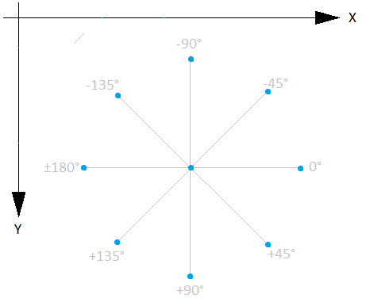
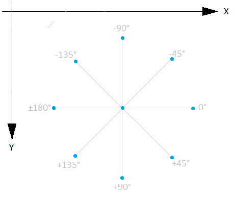

Interface Trigonometry
public interface Trigonometry
TRIGONOMETRY FUNCTIONS
This module contains all the trigonometry functions you need to perform angle and distance computation.
In the spaceship environment, we will manipulate angles in degrees. Very often in computing science, the Y-axis is upside down compared to your math courses. This is historically due to the fact the first line drawn by the screen is the one at the top, and last drawn line is the one at the bottom. Here below is the diagram that shows how we will handle absolute angle values :

This module contains all the trigonometry functions you need to perform angle and distance computation.
In the spaceship environment, we will manipulate angles in degrees. Very often in computing science, the Y-axis is upside down compared to your math courses. This is historically due to the fact the first line drawn by the screen is the one at the top, and last drawn line is the one at the bottom. Here below is the diagram that shows how we will handle absolute angle values :

- Author:
- Romuald GRIGNON
-
Field Summary
Fields Modifier and Type Field Description static floatPIThe PI value (Code Level #--). -
Method Summary
Modifier and Type Method Description floatabs(float x)This function computes the absolute value (Code Level #--).intabs(int x)This function computes the absolute value (Code Level #--).floatatan2(float y, float x)Returns the inverse tangent (Code Level #--).
The returned value is though an absolute angle.floatcos(float x)Returns the cosine of an angle (Code Level #--).floatgetAbsoluteAngleFromPositions(float x0, float y0, float x1, float y1)Returns the angle value between the horizontal line and the [x0-x1] segment (Code Level #9).
The center of the angle is the x0/y0 point.floatgetDistanceBetweenPositions(float x0, float y0, float x1, float y1)Gets the distance between two sets of points (Code Level #10).
The distance is measured by the Pythagorean theorem.floatgetRelativeAngleDifference(float angle1, float angle2)This function returns the difference between 2 absolute angles given in parameter (Code Level #11).
The result will be a relative angle, in degress, telling your ship to turn either left or right.floatsin(float x)Returns the sine of an angle (Code Level #--).floatsqrt(float x)This function computes the square root of a value (Code Level #--).floattan(float x)Returns the tangent of an angle (Code Level #--).
-
Field Details
-
PI
static final float PIThe PI value (Code Level #--).- See Also:
- Constant Field Values
-
-
Method Details
-
cos
float cos(float x)Returns the cosine of an angle (Code Level #--).- Parameters:
x- a floating value of an angle in degrees.- Returns:
- the cosine of x, between -1.0 and +1.0.
-
sin
float sin(float x)Returns the sine of an angle (Code Level #--).- Parameters:
x- a floating value of an angle in degrees.- Returns:
- the sine of x, between -1.0 and +1.0.
-
tan
float tan(float x)Returns the tangent of an angle (Code Level #--).- Parameters:
x- a floating value of an angle in degrees.- Returns:
- the tangent of x, between -infinity and +infinity
-
atan2
float atan2(float y, float x)Returns the inverse tangent (Code Level #--).
The returned value is though an absolute angle.- Parameters:
y- a floating value of the delta on Y-axis.x- a floating value of the delta on X-axis.- Returns:
- a floating value of the angle in degrees between -180.0 and +180.0.
- 0 means the segment is horizontal and goes toward the Right edge of the screen.
- +90.0 means the segment goes toward the Bottom edge of the screen, along the Y-axis.
- -90.0 means the segment goes toward the To edge of the screen, along the Y-axis.
- +180.0 or -180.0 means the segment goes toward the Left edge of the screen, along the X-axis.
-
sqrt
float sqrt(float x)This function computes the square root of a value (Code Level #--).- Parameters:
x- the input floating value.- Returns:
- a floating value equals to the square root of x.
-
abs
float abs(float x)This function computes the absolute value (Code Level #--).- Parameters:
x- a floating value.- Returns:
- a floating value equals to the absolute value of x.
-
abs
int abs(int x)This function computes the absolute value (Code Level #--).- Parameters:
x- an integer value.- Returns:
- an integer value equals to the absolute value of x.
-
getAbsoluteAngleFromPositions
float getAbsoluteAngleFromPositions(float x0, float y0, float x1, float y1)Returns the angle value between the horizontal line and the [x0-x1] segment (Code Level #9).
The center of the angle is the x0/y0 point.- Parameters:
x0- X-axis value of the source position.y0- Y-axis value of the source position.x1- X-axis value of the destination position.y1- Y-axis value of the destination position.- Returns:
- a floating value angle in degrees, between -180 and +180.
- 0 means the segment is horizontal and goes toward the Right edge of the screen.
- +90.0 means the segment goes toward the Bottom edge of the screen, along the Y-axis.
- -90.0 means the segment goes toward the To edge of the screen, along the Y-axis.
- +180.0 or -180.0 means the segment goes toward the Left edge of the screen, along the X-axis.
-
getRelativeAngleDifference
float getRelativeAngleDifference(float angle1, float angle2)This function returns the difference between 2 absolute angles given in parameter (Code Level #11).
The result will be a relative angle, in degress, telling your ship to turn either left or right.- Parameters:
angle1- floating value of the absolute source angle (in degrees). This value must be between -180 and +180.angle2- floating value of the absolute destination angle (in degrees). This value must be between -180 and +180.- Returns:
- a floating value angle in degrees, between -180 and +180.
A positive value indicates you must rotate to the Right to go from angle1 position to angle2 position.
A negative value indicates you must rotate to the Left to go from angle1 position to angle2 position.
- 0 means both angles are equivalent.
- +90.0 means angle1 must turn 90 degrees to the right to reach angle2.
- -90.0 means angle1 must turn 90 degrees to the left to reach angle2.
- +180.0 or -180.0 means angle1 and angle2 are opposed. angle must perform a u-turn to reach angle2.
-
getDistanceBetweenPositions
float getDistanceBetweenPositions(float x0, float y0, float x1, float y1)Gets the distance between two sets of points (Code Level #10).
The distance is measured by the Pythagorean theorem.- Parameters:
x0- X-axis value of the source position.y0- Y-axis value of the source position.x1- X-axis value of the destination position.y1- Y-axis value of the destination position.- Returns:
- a floating value for the distance between points (x0/y0) and (x1/y1).

-